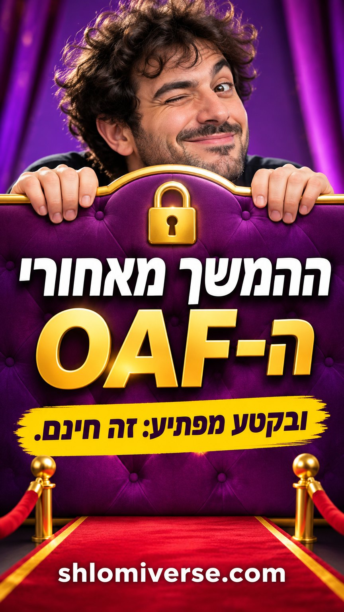
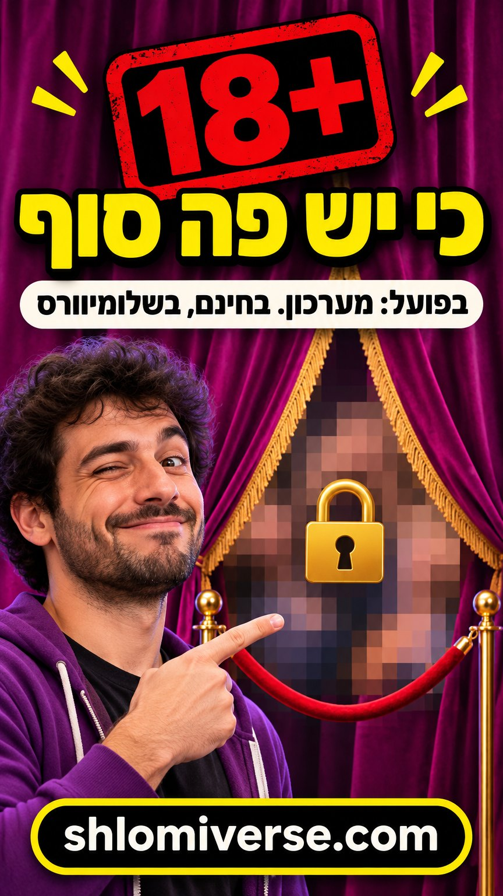

ברשתות הסרטון נעצר ברגע הכי מותח - חיתוך חד - וכרטיס סיום מצחיק שולח לשלומיוורס, שם רואים את הסוף. הכרטיס צוחק על אתרי התוכן בתשלום, בלי להגיד את השם.
כפתור בפס של הטיימליין מסמן איפה הגרסה לרשתות נעצרת. מזיזים את הסימון בגרירה, ו-× מוחק אותו.
מתג שמנגן כל גרסה כמו שהיא תצא. כל מה שעורכים נשמר בפרויקט אחד.
מוסיף כרטיס סיום כשכבות רגילות, שמופיעות רק ברשתות. אפשר לשנות כל חלק בו.
הייצוא מוציא את הסרטון המלא (לשלומיוורס) ואת הגרסה לרשתות. הפרסום שולח לכל מקום את הגרסה שלו.
עוצבו ב-GPT Image 2.6, מתוך הניסוחים שטרה הכי אהבה. הפנים בתמונות הן של אדם שהמודל המציא, לא שלך (ראה שאלה 2).

א. ההמשך מאחורי ה־OAFובקטע מפתיע: זה חינם. הקריצה הכי ישירה לפורמט, וה"חינם" מוריד את העוקץ.
ב. 18+ כי יש פה סוףבפועל: מערכון. בחינם, בשלומיוורס. עוצר את הגלילה הכי מהר. שים לב שהפיקסלים מאחורי הווילון עלולים להיראות פרובוקטיביים מדי.| כותרת | שורה קטנה |
|---|---|
| צונזר: חשיפת פאנץ׳ מלאה | הגרסה הלא מצונזרת: shlomiverse.com |
| הגרסה הלא חתוכה. של מערכון. | המשך בחינם בשלומיוורס |
| הפאנץ׳ עבר לתוכן פרימיום | פרימיום במחיר אפס: שלומיוורס |
| רוצים לראות איך זה נגמר? | רמז: לא כאן. shlomiverse.com |
| החלק האסור לצופי רילס | כי הוא רק בשלומיוורס. חינם. |
| המשך הפרק זמין למנויים | כלומר: לכל מי שנכנס. שלומיוורס |
| הפאנץ׳ מסתתר מאחורי לינק | תמצאו אותו ב־shlomiverse.com |
| האלגוריתם אישר רק עד כאן | בשלומיוורס הוא פחות ביישן |
| נשארתם עם הטיזר | הפאנץ׳ מחכה בשלומיוורס |